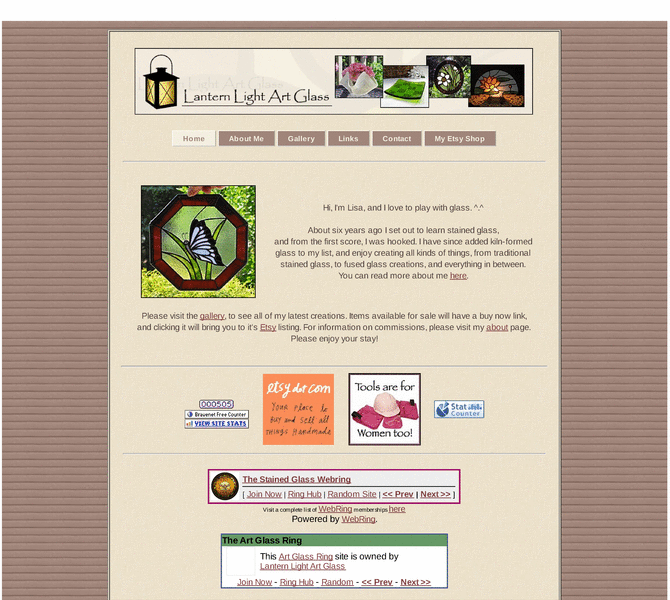

Previewing: Lantern Light Art Glass Previewing: Lantern Light Art Glass 
Use the left/right red arrow controls to navigate through this ring - Click the preview image to visit the member site.

Handcrafted stained glass and kiln formed creations, including suncatchers, lamps, jewelry, art glass, links, and more.
Lantern Light Art Glass owned by:
 freethinker131 freethinker131
A member of the original webring since 04/14/2011.
|
|